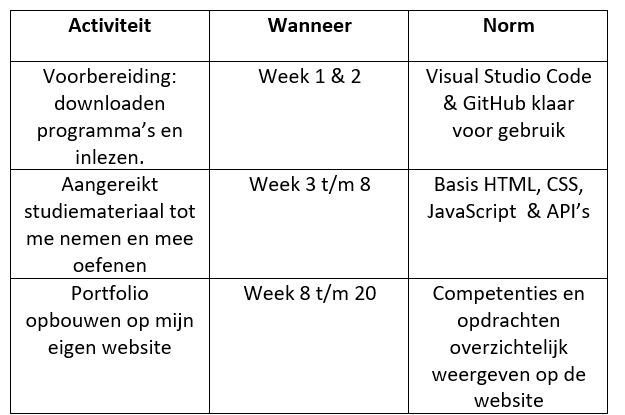
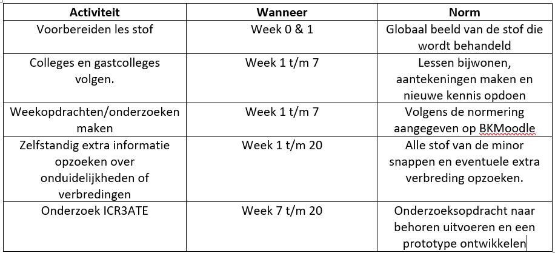
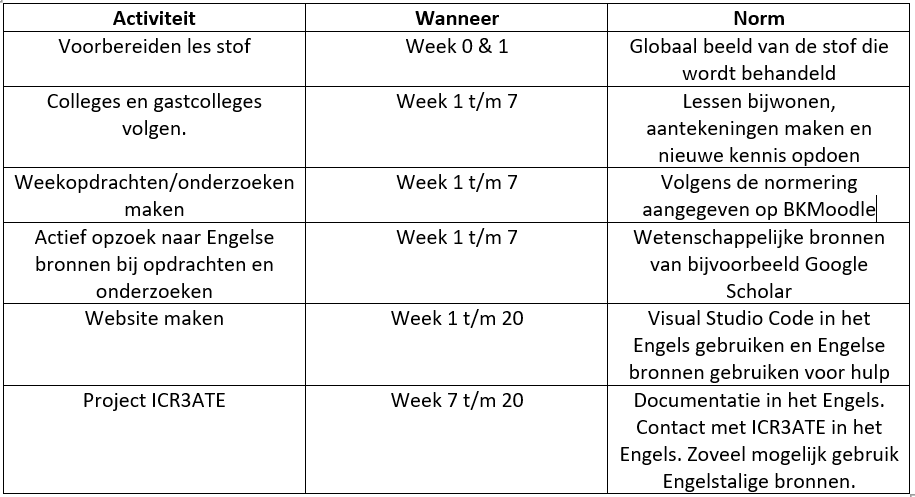

Deze pagina gaat over alle relevante persoonlijke doelen ten aanzien van mijn professionele ontwikkeling. Hiervoor is al dieper in gegaan op mijn aandachtspunten. Om mijn persoonlijke doelen te behalen zal er ook een planning worden gemaakt zodat deze doelen aan activiteiten, normen en tijd gekoppeld kunnen worden.
Persoonlijke doelen
Tijdens deze minor heb ik voor mezelf meerdere doelen gesteld die mij verder moeten helpen in mijn professionele ontwikkeling.
Om deze doelen duidelijk te hebben heb ik ze SMART geformuleerd.
Hieronder zijn mijn leerdoelen SMART geformuleerd uitgelegd. Daarnaast is er een planning te vinden hoe ik deze doelen ga behalen. De minor loopt van 31 augustus 2020 tot 19 januari 2021, dit zijn ongeveer 20 weken. Onder de leerdoelen is nog een reflectie en peer review te vinden.
Leerdoel 1 SMART geformuleerd
Specifiek: Ik wil zelf leren de code te schrijven om een werkende website te maken. Deze website moet in iedergeval bestaan uit HTML en CSS componenten.
Meetbaar: Dit is meetbaar door te zien of ik een werkende website heb opgeleverd aan het einde van de minor.
Acceptabel: Vanuit de minor moeten we zelf een website maken om ons portfolio op te laten zien. Doordat dit vanuit de minor moet zullen we hier ook genoeg tijd voor krijgen.
Realistisch: Door de ondersteuning die ik krijg vanuit de minor en de hoeveelheid informatie die op het internet te vinden is is dit acceptabel.
Tijdsgebonden: De deadline voor het inleveren van het portfolio is 13 januari 2021, op dit moment moet het behaald zijn.
De reden dat ik voor dit leerdoel heb gekozen is dat ik het altijd erg interessant vind hoe de verschillen in websites zo groot kunnen zijn. Dit maakt me nieuwsgierig hoe het werkt om een website te maken, daarnaast denk ik dat de kennis hiervan nooit verkeerd is om te weten.
Tabel 1. Planning leerdoel 1

Leerdoel 2 SMART geformuleerd
Specifiek: Ik wil mijn kennis vergroten over de werking en het gebruik van techniek en ICT. Of te wel nieuwe dingen leren.
Meetbaar: Dit is meetbaar door te kijken naar de dingen die ik nu niet weet en aan het einde van de minor wel (bijvoorbeeld de website).
Acceptabel: De minor draait om innovaties en nieuwe technieken dus is dit acceptabel om te halen.
Realistisch: Door de vakken, het project en de gastcollege's die we zullen krijgen tijdens de minor is dit realistisch om te halen.
Tijdsgebonden: Op 22 januari 2021 vindt het eind seminar plaats, dus dan moet het behaald zijn.
De reden dat ik voor dit leerdoel heb gekozen is omdat ik tijdens mijn opleiding Bedrijfskunde weinig technische of ICT dingen heb geleerd. Ik heb wel het vak informatiemanagement gehad, dus heb al wel iets van basis kennis. Echter heb ik dit vak maar 1 periode gehad en wil ik graag meer leren over ICT (in combinatie met business).
Tabel 2. Planning leerdoel 2

Leerdoel 3 SMART geformuleerd
Specifiek: Ik wil mijn professionele Engelse woordenschat vergroten en verbeteren.
Meetbaar: Dit is meetbaar door bijvoorbeeld te kijken naar mijn vorige Engels projecten en het huidige Engels project en dit te vergelijken. Het is ook terug te zien in bijvoorbeeld mijn website, aangezien Visual Studio Code in het Engels is en informatie over HTML en CSS ook. Wanneer ik dit succesvol begrijp kunnen hier conclusies uit getrokken worden.
Acceptabel: Vanuit de minor wordt veel ruimte gegeven om dingen in het Engels te doen. Daarnaast zijn veel termen tijdens deze minor in het Engels. Om mijn website te maken kunnen we gebruik maken van Visual Studio Code, dit programma is ook volledig Engels. Daarnaast moet je veel opzoeken over HTML en CSS, deze informatiebronnen zijn ook bijna allemaal Engels. Hierdoor kan ik moeilijke Engelse teksten mij eigen maken.
Realistisch: Als projectgroep doen wij een project voor ICR3ATE dat een Engels software developer trainee in dienst heeft. Door dat wij tijdens het project veel met hem te maken zullen hebben moet zowel de spraak als de tekst in het Engels zijn.
Tijdsgebonden: De deadline voor het inleveren van het portfolio is 13 januari 2021, echter is het eind seminar op 22 januari 2021. Hierdoor zal dit behaald moeten zijn op 22 januari 2021.
De reden dat ik dit leerdoel voor mezelf heb opgesteld is omdat ik vind dat goed Engels kunnen spreken, schrijven en begrijpen erg belangrijk is tegenwoordig. Het is niet dat ik geen Engels kan, maar echt wat technischer Engels of vaktaal vind ik soms nog lastig. Ook wil ik later graag iets met business en It doen, hierbij is het handig als ik al wat kennis heb over dit soort vaktaal. Hierdoor denk ik dat dit een mooi punt is om mezelf op verder te onwtikkelen.
Tabel 3. Planning leerdoel 3

Reflectie
Om vooraf te reflecteren op mijn doelen heb ik dit op donderdag 8 oktober 2020 besproken met Luuk van der Voort
en Nick van Oostrum. Tijdens dit reflectie moment hebben we elkaars doelen bekeken en hier kritisch naar gekeken.
Als feedback kreeg ik dat ik mijn leerdoelen nog wat specifieker moest maken. Dit heb ik gedaan door beter uit te leggen
wat nou precies het doel is en hoe ik dit kan bereiken door middel van de minor.
Daarnaast gaf ik niet echt aan waarom dit leerdoel voor mij belangrijk is, de uitleg hiervan heb ik na het SMART geformuleerde doel toegevoegd.
Op 4 januari 2021 hebben Luuk, Nick en ik teruggeblikt op onze doelen en of we dit behaald hebben of nog gaan behalen. Over het doel van een eigen website maken aan de hand van HTML en CSS kan ik zeggen dat ik het behaald heb. Ik heb ook nog een klein stukje Javascript in mijn website zitten en heb ook gebruik gemaakt van API's. Echter ben ik me ook bewust van het feit dat er nog super veel te leren valt op dit vlak, echter ben ik wel blij en trots met het resultaat dat ik bereikt heb.
Mijn tweede leerdoel, kennis vergroten over ICT en technologie, is wat lastiger te meten. Ik heb zeker het gevoel dat ik veel geleerd heb op dit vlak. Echter bleef (begrijpelijk) de theorie tijdens de lessen soms wat oppervlakkig. Tijdens het project dat wij hebben gedaan bij ICR3ATE zijn we wel echt de diepte in gedoken op het gebied van blockchain, micropayments en smart contracts. Dit vond ik dan ook erg leuk om te doen, ik ben tevreden met het resultaat van dit leerdoel.
Mijn laatste leerdoel was het vegroten van mijn professionele Engelse taal vaardigheden. Aangezien veel informatie omtrent Smart Industry onderwerpen en het maken van je eigen website in het Engels waren heb ik veel kunnen leren. Daarnaast hebben we het ICR3ATE project volledig in het Engels gedaan, zowel de documentatie als de communicatie. Hierdoor heb ik echt veel kunnen leren, hier ben ik dan ook erg tevreden over. Ik heb mijn onderzoek ook nog vergeleken met mijn vorige Engels projecten en hierin heb ik zeker vooruitgang gezien op het gebied van grammatica en woordenschat. Echter merkte ik tijdens het project ook ik me ontwikkelde op dit gebied en dat het steeds gemakkelijker en beter ging.